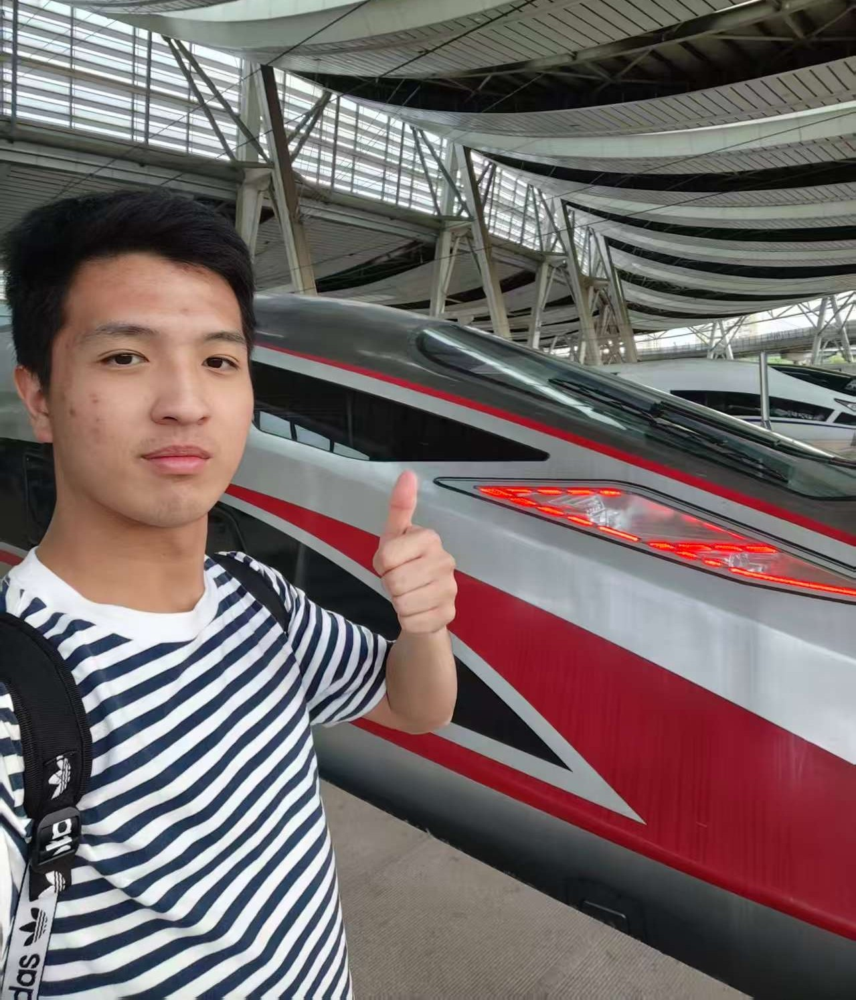

“注意安全"
苏伟全 - Audio, Programmer

Hello everyone, my name is Raynard Soegandha. I am 18 years old and currently pursuing a Computer Science degree at the Beijing Institute of Technology. Since childhood, I have always been fascinated by technology. Growing up with easy access to computers and surrounded by people skilled in technology and the Internet of Things, I quickly developed a strong interest in computers.
My real journey into programming began in high school when I enrolled in my first programming class. That experience sparked my passion for coding and problem-solving. The first language I learned was Python, which gave me a solid foundation to understand programming logic, even though I did not progress very far at the beginning. Later, in 10th grade, I challenged myself to learn C++. At first, I struggled with its complexity, but through tutorials, videos, and resources like w3schools.com, I gradually improved and began creating simple programs. This experience showed me the joy of continuously learning and overcoming challenges.
Currently, in this website-making project, my role is as a coder. This requires me to dive deeper into web development, explore new coding techniques, and understand how websites function from the ground up. I enjoy this role greatly because it allows me to apply my skills in a practical way while continuing to learn more about programming and web technologies. I believe working on projects like this is one of the best ways to grow as a programmer.
Looking ahead, I am very excited to collaborate with my teammates not only on this project but also on many more to come. I look forward to honing my coding skills, learning new technologies, and building meaningful projects together.